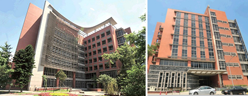
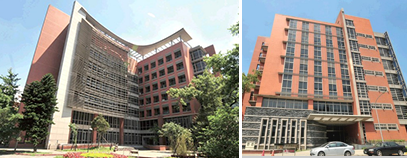

最新消息
發現攝護腺癌的致命亞型關鍵特徵，可應用於篩檢與治療
攝護腺癌在惡化過程中，常會對荷爾蒙療法產生抗性且隨著癌轉移，中央研究院農業生物科技研究中心蕭培文研究員的研究團隊的最新研究發現，具荷爾蒙抗性及轉移性攝護腺癌細胞高度表現galectin-4蛋白，惡化過程中，並伴隨細胞表面蛋白質的醣化修飾會轉變成帶唾液酸化的O型短鏈醣為主。 Galectin-4 透過與細胞表面多種酪胺酸激酶受體(RTKs)上O型醣鏈的結合，活化MYC 驅動特定的O型醣基化酵素表現，主導醣鏈生合成路徑轉向，產生更多galectin-4 能結合的O 型醣鏈，如此形成正向回饋，逐步放大RTK 活化訊息表現，藉此達到荷爾蒙抗性、腫瘤幹細胞以及轉移的特性。在臨床分析中，PSA指數高的攝護腺癌患者，兼具高量UDP-GlcNAc、UDP-GalNAc、UDP-Gal、CMP-sialic acid，帶唾液酸化與未唾液酸化的core 1 O型短鏈醣的蛋白質，以及galectin-4指數高者，預期腫瘤將快速惡化，對荷爾蒙療法產生抗性並發生癌轉移，檢出以上分子特徵者為高危險的亞型。根據研究發現，可以採取非侵入性的檢測方式，透過攝護腺癌患者的人體尿液和血液中，測定O型蛋白質醣化所需的糖核苷分子受質，以及半乳糖凝集素-4 (galectin-4)蛋白質含量的指數，可作為鑑別快速惡化的攝護腺癌亞型之指標，並利用藥物抑制腫瘤細胞表達MYC或SOX9來進行治療。 相關研究成果分別於2018年6月15日登上國際學術期刊《美國實驗生物學聯合會》（The FASEB Journal）及2016年10月1日登上國際學術期刊《癌症研究》(Cancer Research)。 本論文第一作者為國防醫學院博士生曾雪芬（Sheue-Fen Tzeng）與本院農業生物科技研究中心博士後研究員蔡進賢（Chin-Hsien Tsai），作者群包括蕭培文(Pei-Wen Hsiao) 研究員與其研究團隊、臺灣大學生物科技研究所蔡孟勳 (Mong-Hsun Tsai)合聘教授、三軍總醫院教學副院長兼陸軍後勤指揮部軍醫處少將查岱龍 (Tai-Lung Cha) 教授及其團隊等。研究經費由科技部及中研院前瞻計畫支持。
論文連結：
http://cancerres.aacrjournals.org/content/76/19/5756.long
https://www.fasebj.org/doi/pdf/10.1096/fj.201800687
新聞聯繫人：
蕭培文，中央研究院農業生物科技研究中心研究員
(Tel) 02-2787-2079 ; pwhsiao@gate.sinica.edu.tw
蔡進賢，中央研究院博士後研究員
(Tel) 02-2787-2077 ; tch@gate.sinica.edu.tw
曾雪芬，國防醫學院生命科學研究所博士生
(Tel) 02-2787-2077 ; rtecs119@gate.sinica.edu.tw
 
